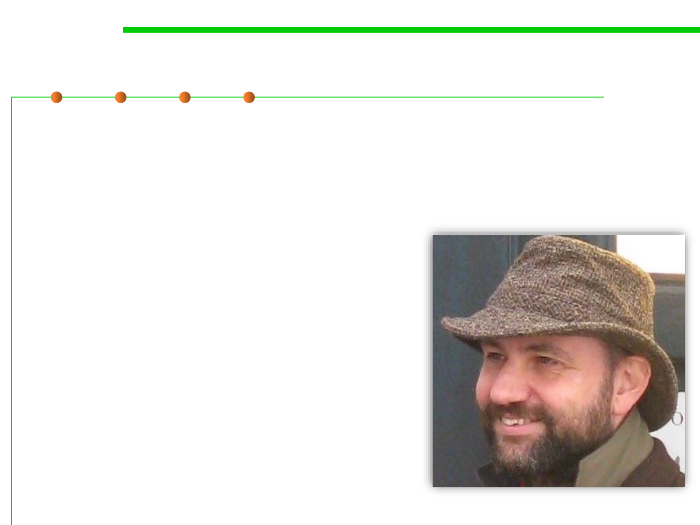

Code refactoring
9.1 Code Smells Refactoring
▪ Code refactoring is the process of restructuring existing source
code without changing its external behavior.
▪ Refactoring improves nonfunctional attributes of the software.
▪ Advantages include improved code
readability and reduced complexity;
▪ These can improve source-code
maintainability and create a more
expressive internal architecture or
object model to improve extensibility.
Martin Fowler (1963-)